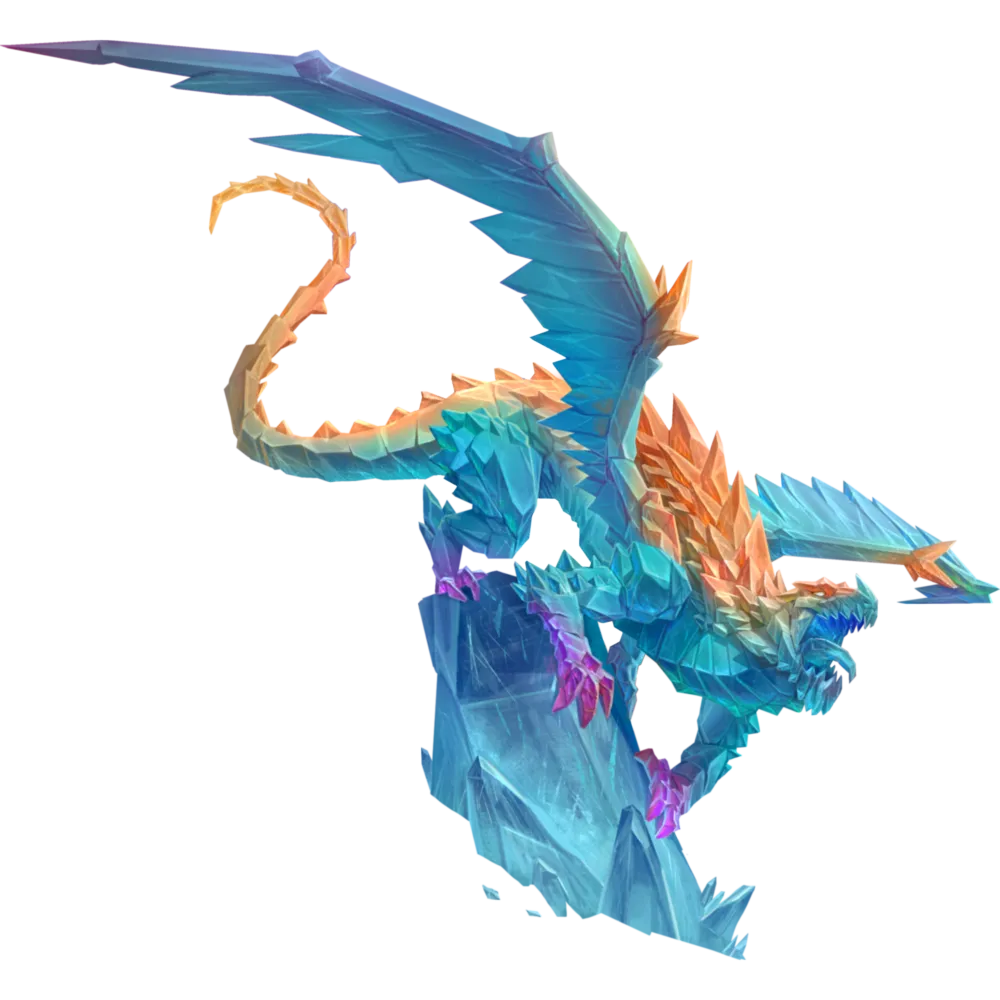

各年龄段数据卡
水晶龙是源自土元素位面、通体璀璨夺目的晶石与宝石巨龙。虽然水晶龙总体上心地善良且善于结交朋友，但它们往往都有一个显著的性格弱点：极度虚荣，尤其是在关乎自身容貌外表的时候。 这份骄傲与虚荣是水晶龙身上的一大软肋，它们的竞争对手与敌人常常能借着摆弄其自尊心，诱使这些原本睿智审慎的巨龙做出鲁莽失策的举动。尽管大多数水晶龙对过于露骨虚伪的奉承多少有些抵抗力，但通过侮辱其外表来激怒它们，往往要有效得多。 反过来说，任何犯下大错、胆敢嘲弄水晶龙仪容的人很快便会发现，这些平时友善、耐心而仁慈的巨龙会瞬间化作一点就着的焦躁怒火团，哪怕言者并无恶意也会勃然大怒。 摆盘至上比起外观朴素甚至卖相不佳却滋味绝妙的食物，水晶龙更偏爱那些造型惊艳、摆盘无懈可击的佳肴。大多数水晶龙都认同“未曾入口，先饱眼福”的道理；在心理因素的作用下，食物的外观会对实际尝起来的味道产生强烈影响。不仅如此，真正赏心悦目的外观还可以借由魔法或艺术长期保存，拿来向他人炫耀与分享；而口腹之味一旦品尝过后，便转瞬即逝了。 在日常生活中，水晶龙偏爱充满变化的交谈与日程安排，却又需要一处井然有序、精心布置的环境，以便不受打扰地炫耀自身的光彩华美。因此，它们在日常起居中巧妙平衡着秩序与随性，只求达成最契合自身偏好的完美状态。 水晶龙的巢穴是位于幽深地底或土元素位面、经过悉心策展布置的晶洞，它们可以在其中尽情展示自身以及宝库藏品的璀璨之美，简直就像一座私人博物馆。然而无论多么辉煌、多么美丽，没有任何一座巢穴称得上十全十美；因此水晶龙总在马不停蹄地修缮与改造，只为探寻自己心目中的“终极愿景”。至于那究竟是什么模样，其他任何生物都无从知晓，就连水晶龙自己也唯有在真正实现它的那一刻才会明白。当然，哪怕真的寻得了那份“终极愿景”，这份满足也极少能维持太久――因为永远还会有“再添最后一样点缀”能让巢穴变得更加壮丽辉煌。 尽管每条水晶龙装点巢穴的审美各具特色，但它们都有一个共同点：巢穴内遍布着数不胜数的反光表面，好让巨龙能向来访的旁观者以及自己全方位展现那耀眼夺目的姿容。镜子、水晶、澄澈水池乃至更多事物――凡是能映出倒影的东西，全都来者不拒。 水晶龙独处时常常会感到寂寞，因此很快就会与周遭邻居打成一片――除非它们的邻居是可憎的异界恐怖怪胎、嗜杀成性的恶魔或其他诸如此类的邪恶之辈。毕竟，朋友越多，能瞻仰它们绝世风采的观众也就越多。抛开虚荣心不谈，水晶龙都是出色的健谈者，既擅长与其他智慧生物结交友谊，也精于驯养动物之类的小生灵作为宠物。 水晶洞窟水晶龙倾向于在能唤起土元素位面故乡记忆的地下洞窟中筑巢。但它们绝不会随便挑一个洞窟凑合度日：干涸光秃的岩洞入不了它们的眼，肮脏阴暗的洞穴更是免谈。相反，它们青睐那些拥有壮观岩层构造、天然水晶簇与其他秀美地貌特征的洞穴与隧道。世上从一开始就能达到水晶龙严苛标准的地点屈指可数，哪怕是万里挑一的洞天福地，在水晶龙眼里也总还有值得雕琢改进之处。因此，水晶龙往往会耗费数百年光阴反复装潢改造，让巢穴的美学意境一步步趋近完美。 太古水晶龙水晶龙本就普遍爱慕虚荣，而太古水晶龙更是将这份龙族虚荣演绎到了令年轻同胞望尘莫及的境界。平心而论，就凭它们举世无双的实力与德高望重的漫长岁月，它们完全有资格骄傲自矜；但与其他水晶龙一样，太古水晶龙的自负通常仍聚焦于自身的容貌外表，以及宝库与巢穴的华美排场上。 诚然，太古水晶龙是令人屏息的绝美生灵，它们会一丝不苟地打理自身仪态与栖息环境，力求将视觉冲击力推向极致。即便如此，审美终究带有主观性，最古老、最强大的水晶龙也未必在每一位观者眼中都是最美的。每条龙的外貌各具千秋，有时某条年轻的水晶龙反倒会在同族或更广泛的社会舆论中惊艳四座，风头一时――甚至彻底――盖过太古水晶龙的盛名。 这倒不是说太古水晶龙会妒火中烧地对着满屋子魔镜尖声怪笑，不惜一切代价也要争当世间第一美人。与其他水晶龙一样，除了偶尔沉溺于孤芳自赏之外，它们平日里通常和蔼可亲、心地善良。但这确实意味着，它们格外青睐由其他强大存在组成的交际圈――那些同伴愿意由衷给予它们所渴望的赞美与认同。 镜影交辉水晶龙虽以在巢穴中搜罗反光表面而闻名，但如果整座宝库里只有镜面，那么倒影之中便只剩水晶龙自己可供展示了。固然有些虚荣到极点的水晶龙当真认真考虑过这种方案，但最终所有水晶龙都会得出同一个结论：单靠自己还是不够的。毕竟，倘若没有其他精美绝伦的器物作为陪衬，观者又怎能将水晶龙那无与伦比的美貌领略到极致呢？正因如此，比起金币估值更高的财宝，水晶龙更偏爱具有卓越美感与艺术价值的藏品――一件积满灰尘、外表陈旧的强力魔法物品，摆在展台上远不如一件价值仅为其百分之一的华美艺术品来得称心。 太古水晶龙自然足够睿智，一眼便能识破那些企图迎合其喜好、靠阿谀奉承来操纵巨龙以谋求邪恶图谋与一己私利的奸佞之徒。然而，面对那些并无真正恶意的交往者时，界限就要模糊得多了。朝中有人好办事，结交一位太古水晶龙显而易见能带来巨大的好处；正因如此，太古水晶龙心底总难免暗自揣度：眼前的友谊与赞美之中，究竟有多少是出于一时的功利或利益交换？ 出于这个原因，太古水晶龙更容易信任那些实力与自己相当或相近的存在所给出的评价――因为这些强者并不怎么需要仰仗太古水晶龙的力量，也承受得住它的脾气，自然不太会刻意曲意逢迎，而更可能坦率道出真实想法。只可惜，够格称得上这种平辈知己的，往往只有特定时代最顶尖的凡人传奇英雄，以及诸如其他太古龙这般的古老存在。 任何凡人若是能与一位太古水晶龙缔结这般深厚而大体平等的真挚友谊，便等于赢得了一位终生盟友。在这名凡人的一生中，太古水晶龙往往会定期寄去魔法或实体书信，并只要双方方便便会主动邀约当面相聚。更有甚者，许多太古水晶龙在凡人挚友离世、独留巨龙于世间之后，依然会世代照拂挚友的后裔。 菲莉，命运锋刃作者：未决者团体的萨奇・布拉德（Sutch'a Brad of the Undecidables） 在所有太古龙之中或许独一无二的是，菲莉最初诞生时其实是一柄很久以前由远古水晶锻造而成的强大智能长剑。在与一股滔天邪恶展开的决战高潮中，她濒临彻底损毁、即将碎裂成无数晶屑；为了救她，她的持有者兼搭档萨奇布拉德动用了强大的祈愿魔法。然而最终的结果却出乎两人的预料：魔法没能修复剑身，反而将破碎的魔剑重塑成了一条巨龙。凭借身为神兵利器时积淀的漫长岁月与浩瀚力量，她一重获新生便是一条太古水晶龙；在获得新形态的她鼎力相助下，那股邪恶势力很快便被彻底消灭。 菲莉依然保留着前世身为智能武器时的力量，这赋予了她一种特殊的替代吐息武器――能为敌人降下厄运，同时为盟友带来吉运。尽管她的性格与做魔剑时相差无几，但转生为水晶龙后还是不可避免地染上了几分虚荣。如今，她以自封女神的姿态周游世界，试图为所有她认为配得上的人送去好运或成就伟业的良机――用她自己的话来说，就是“让世间一切心怀善意之人拥有更多做出惠及众生之抉择的契机”。她总在幕后悄然赐下这些恩泽，化装成受惠者信赖的对象，例如新交或旧识的挚友与顾问；同样地，她也会设法引导那些正在酿成严重祸害的人走上另一条道路。 尽管她珍爱的搭档萨奇布拉德早已寿终正寝，但两人留下了一脉以逆天好运而闻名的龙脉后裔。至于这份好运究竟是不是因为菲莉暗中在命运天平上偏向了自己的子孙后代，她本人可半个字都不会透露。 “虹彩王子”派瑞德西安在世界各地的艺术画廊中，展出的作品大多出自周边定居族裔的本土名家之手，唯有一个奇特而瞩目的例外：几乎每一家够格称得上名门的大型博物馆，都至少收藏着一件出自那位高产画家兼雕塑家――顶着浮夸名号“虹彩王子”派瑞德西安――的作品。艺术学者们总是津津乐道地向博物馆与画廊的访客解释：这些风格独具之作的创作者不是别人，正是一位太古水晶龙；而且这个头衔并非什么哗众取宠的化名，而是这条巨龙亲自选定的真名与封号，就连那刻意押头韵的华丽腔调也是它本尊的手笔。 有些巨龙因毁天灭地的暴行或开创建国王朝而闻名天下，“虹彩王子”却在横跨数座大陆的创意与艺术圈层中享有崇高声望。在色彩斑斓的水晶洞窟巢穴中，他一边构思下一部艺术杰作，一边用魔法随时探听评论家与仰慕者们的反响――听到赞美便得意洋洋地顾影自怜，面对那些贬低其艺术选择与探索精神的论调则嗤之以鼻。他从不吝于动用短讯术魔法直接联系他人，无论是为了结交知音还是宣泄不满。不止一位艺术评论家曾被突如其来的一道愤懑传讯吓得魂飞魄散，直到那时才惊觉竟有一位威能无边的太古龙一直在如此仔细地盯着自己的一言一行与字字句句。不过，派瑞德西安尽量不让自己沉溺于负面情绪，而是专注于培育一个志趣相投、品味契合的创作者圈子，好随时畅聊一切与艺术有关的话题。 在虹彩王子眼中，就连他自己的容貌与居所也是天生用来挥洒艺术才华的空白画布。在他那错综庞大的洞窟群巢穴里，每一间厅室都是围绕单一色彩的水晶与艺术品展开的专题习作；厅内的魔法防护结界不仅负责守护艺术品，更经过精心设计，能与房间内鲜明跃动的色彩交相辉映、彼此共鸣。既然防护结界也能兼具艺术美感，又何必只让它承担枯燥的实用功能呢？通过引流当地的魔网地脉，派瑞德西安得以借助幻术、光亮魔法与各式视觉特效，为自己的私人画廊源源不断地注入缤纷的魔法增色效果。 何种晶体？水晶龙的身躯覆盖着各式各样五彩斑斓的晶体，世上没有两条水晶龙的晶体构成完全相同。水晶龙对自己独一无二的外表怀有极度的自豪，十分乐意连续几个小时向来访者逐一细数身上的每一处晶簇特征。它们还会兴致勃勃地讲解这些晶体的详细物理性质，包括折射率、晶体解理、莫氏硬度，乃至荧光或磷光等更为罕见的光学特性。 与此同时，派瑞德西安还会综合运用魔法、饮食调理与精细修整，随时间推移不断改变自身的躯体外观，有时甚至会来一场彻头彻尾的形象大改造。从某种意义上说，他依然保留着水晶龙典型的虚荣心；但与大多数同胞不同的是，他并不怎么在意旁人对自己天生固有外貌的夸赞――他真正在乎的是人们是否尊重他的艺术构想，是否赞叹他为了契合所要表达的主题与情感而对自身色彩及晶体排布所做的精妙重塑。 面对其他满怀抱负的艺术家同行――哪怕对方的风格与品味与自己截然不同――虹彩王子也总是满怀热忱，从不心生嫉妒。只要对方尊重他的作品与才华，无论是初出茅庐的新秀还是声名显赫的宗师，他都十分乐意与之促膝畅谈。他曾将不止一位艺术家收入羽翼之下加以庇护――通常这是比喻意义上的提携，但有一次却彻彻底底是字面意义：当时一名残暴的霸主企图压制艺术表达、扼杀自由思想，派瑞德西安亲自振翅飞赴现场救援那位艺术家，将其严严实实地护在自己龙翼之下，同时独力迎战霸主麾下的四大名将，打出了平日里人们绝难将他那温文尔雅的艺术家形象与之联系起来的史诗级恶战。 除了审查艺术的专制独裁者之外，虹彩王子最鄙夷的群体便是那些残忍刻薄的评论家――这帮人总企图靠毫无必要、恶毒尖酸的酷评去碾碎艺术家的希望与梦想，以此满足自己扭曲的优越感。对付这些舞文弄墨的渺小暴君，派瑞德西安从不动用武力碾压，而是亲自执起鹅毛笔，在他们最引以为傲的笔墨疆场上将其彻底击溃。 魔镜，魔镜水晶龙热衷于在宝库中收集镜子与各种反光表面，好从每一个最完美的角度欣赏自己的风姿；而在它们之中，太古水晶龙往往还收藏着稀有而强大的魔法镜子。正因如此，它们比几乎任何其他生物都更有可能撞见那些连通奇异平行现实或镜像维度的魔镜，或是能照出凝视者的镜像复制体乃至邪恶双生子的诡异魔镜。这至少已经引发过好几起恶毒太古水晶龙现世的事件――这些恶龙长得与某位声名远扬却心地仁善的水晶龙简直一模一样。正是由于这些镜像复制体的作祟，各地社群与太古水晶龙爆发冲突的频率，远高于与其他大多数“善良阵营”太古龙发生冲突的频率。 |
 水晶龙 |